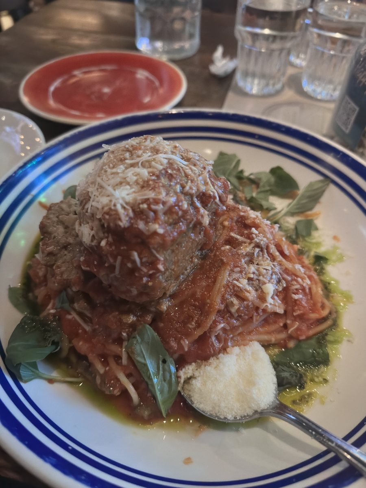

Scaddabush Italian Kitchen & Bar
Nice Atmosphere, but Disappointing Service and Lukewarm Food. We visited Scaddabush Italian Kitchen & Bar on Front Street on Sunday, Nov. 1st, 2026. Unfortunately, our dining experience wasn’t what we had hoped for. There were three of us, and after a short wait, we were seated at a nice table near the front window overlooking the sidewalk. We also had a nice view of the rest of the restaurant, which had a lively, busy atmosphere. The seating and ambience were definitely positives. We each ordered their signature spaghetti with a half-pound meatball. The presentation was attractive, and the portions looked generous. Unfortunately, that’s where things started going wrong. When our server took our order, she asked whether we wanted a large plate to share with two meatballs. We explained that we wanted individual servings with one meatball each. Somehow, she misunderstood and entered only one order for our table of three. Our friend’s meal arrived fairly quickly, but ours didn’t. After approximately 10 minutes, we asked another passing server about our missing meals because our original server was nowhere to be seen. When she returned, she explained that she thought we had ordered one plate to share between the three of us. I was strangely surprised that she kept seeking clarification about why three grown women would want to order their own spaghetti and meatballs. She then said she would put our two missing orders through as a “rush.” We then waited another 20 to 25 minutes without our meals arriving or anyone providing an update. Meanwhile, our friend was hesitant to dig in and eat because she wanted to wait for us, but we encouraged her to go ahead before her food got cold. Eventually, we asked to speak with the manager on duty. Shortly afterward, a woman arrived carrying our two missing meals. She placed them on the table and left without identifying herself as the manager. Unfortunately, when we started eating, our spaghetti and meatballs weren’t hot. When our friend’s meal had arrived earlier, it looked good, and we could see steam rising from it. Ours had no visible steam, looked a mess, and tasted as though it had been sitting for some time before reaching our table. We asked again to speak with the manager, and the same woman who had delivered our food returned. As I began explaining what had happened, she told us that our two meals would be complimentary. We appreciated that gesture, although it was interesting that she hadn’t mentioned it when she originally brought our delayed meals to the table. By that point, we weren’t particularly excited about finishing our food at the restaurant. We requested takeout containers so we could bring the meals home and reheat them. Our friend paid for the meal she’d eaten, we paid for our drinks, and we left. Overall, the restaurant has a pleasant atmosphere, attractive food presentation of the first meal, and generous portions. However, the misunderstanding with our order, the lengthy delay, the lack of communication, and the temperature of our food made this a disappointing visit. I appreciate that management eventually compensated us for the two delayed meals, but I would have preferred receiving our meals together, hot and well presented, without having to repeatedly ask what was happening with our order.